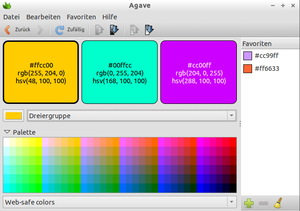

Agave
Dieser Artikel wurde für die folgenden Ubuntu-Versionen getestet:
Ubuntu 16.04 Xenial Xerus
Ubuntu 14.04 Trusty Tahr
Zum Verständnis dieses Artikels sind folgende Seiten hilfreich:
Agave  ist ein einfaches und leichtgewichtiges, in C++ geschriebenes Werkzeug, um passende Farbkombinationen für Grafiken, Bilder oder Webseiten zu finden. Basierend auf einer einzelnen Farbvorgabe kann das Programm sechs unterschiedliche Arten von Farbschemata generieren. Die gewünschte Farbe kann dann in die Zwischenablage kopiert werden und im Programm der Wahl bequem gesetzt werden. Das Programm wurde unter der GNU General Public License (GPL) veröffentlicht.
ist ein einfaches und leichtgewichtiges, in C++ geschriebenes Werkzeug, um passende Farbkombinationen für Grafiken, Bilder oder Webseiten zu finden. Basierend auf einer einzelnen Farbvorgabe kann das Programm sechs unterschiedliche Arten von Farbschemata generieren. Die gewünschte Farbe kann dann in die Zwischenablage kopiert werden und im Programm der Wahl bequem gesetzt werden. Das Programm wurde unter der GNU General Public License (GPL) veröffentlicht.
Installation¶
Das Programm, welches in den offiziellen Quellen vorhanden ist, lässt sich über das folgende Paket installieren [1]:
agave (universe)
 mit apturl
mit apturl
Paketliste zum Kopieren:
sudo apt-get install agave
sudo aptitude install agave
Es ist danach im Menü der jeweiligen Desktopumgebung über "Grafik -> Agave" erreichbar [2].
|  |
| Agave |
Übersicht über die Hauptfunktionen¶
Generieren von 6 verschiedene Arten von Farbzusammenstellungen.
Zufälliges Farbschema generieren.
Einfaches Modifizieren der Farbeinstellungen.
Farbtöne als Favoriten speichern.
Paletten-Historie.
Vier verschiedene Paletten, u.a. "Websichere Farben".
Farbübernahme per Drag'n'Drop in andere Bildbearbeitungsprogramme wie GIMP.
Verfügbar in acht Übersetzungen.
Bedienung¶
Das Programm ist auf eine unkomplizierte und selbsterklärende Bedienung ausgerichtet und kann intuitiv und praktisch ohne größere Einarbeitung verwendet werden. Um alle Möglichkeiten bei der Zusammenstellung geeigneter Farbschemata und ihrer Wirkung auf den Betrachter voll ausschöpfen zu können, lohnt es sich allerdings gegebenenfalls, sich ein wenig in die Thematik von Farbkreis und Farbenlehre einzulesen.
Die Bedienung des Programms erschließt sich im Hauptfenster "von unten nach oben".
Zunächst kann im unteren Ausklappfeld eine der vier vorkonfigurierten Paletten ausgewählt werden. Diese wird anschließend darüber im Feld "Palette" angezeigt.
Per Linksklick
 kann nun aus der Palette eine vordefinierte Farbe, mit der die Erstellung der Farbzusammenstellung begonnen werden soll, ausgewählt werden.
kann nun aus der Palette eine vordefinierte Farbe, mit der die Erstellung der Farbzusammenstellung begonnen werden soll, ausgewählt werden.Alternativ kann auch über das darüber liegende linke kleine Farbfeld auf manuellem Wege ein individueller Farbton definiert werden.
In dem über der Palette liegenden Klappfeld kann nun ausgewählt werden, welche Art der Farbzusammenstellung gewünscht wird:
| Arten von Farbgruppen | |
| Gruppenart | Erklärung |
| "Komplementäre Farben" | Diese liegen sich im 360°-Farbkreis direkt gegenüber, die erzielte Komplementärfarbe liegt also im Winkel von 180° relativ zur Ausgangsfarbe. Komplementärfarben stehen in starkem Farbkontrast und üben so eine spannungsvolle Wirkung auf den Betrachter aus. |
| "Zwei halb-komplementäre Farben" | Liegen im Winkel von 156° und 204° relativ zur Ausgangsfarbe, also leicht versetzt zur Komplementärfarbe. |
| "Dreiergruppe" | In der Dreiergruppe liegen die Farben im Winkel von 0°, 120° und 240° relativ zu einander und sind damit auf den Spitzen eines gedachten gleichseitigen Dreiecks innerhalb des Farbkreises platziert. Dreiergruppen wirken in der Regel grell und plakativ. |
| "Vierergruppe" | Die Farben einer Vierergruppe liegen relativ gesehen auf den Kreispunkten 0°, 90°, 180° und 270°; die Farben liegen also auf den Ecken eines in den Farbkreis eingeschriebenen Quadrats. |
| "Sinngemäße Farben" | Diese sind als Farben definiert, die im Abstand von +/-30° von der Ausgangsfarbe und somit recht nahe im Farbkreis zu einander gelegen sind. Die Farben einer solchen Dreierkombination stehen i.d.R. in harmonischem Einklang zueinander. |
| "Einfarbig" | Durch diese Auswahl entsteht eine Gruppe, die aus dreimal derselben Farbe, jedoch in verschiedenen Helligkeitsabstufungen, gebildet wird. |
Die auf diese Weise festgelegte Farbzusammenstellung wird nun vom Programm in den bis zu vier großen Farbbereichen im oberen Teil des Hauptfensters generiert und kann durch nachträgliches Verändern der bisher vorgenommenen Einstellungen so lange modifiziert werden, bis der gewünschte Farbeindruck erreicht ist.
Weitere Bedienungshinweise¶
Über das Menü "Bearbeiten" oder alternativ die in der Werkzeugleiste gelegenen mit Pfeilen versehenen Schaltflächen lassen sich Helligkeit bzw. Sättigung der gewählten Ausgangsfarbe in kleinen, vorgegebenen Stufen anpassen.
Individuell erstellte Farbtöne lassen sich über das Menü "Favoriten" in die rechts im Programmfenster gelegene senkrechte Favoritenleiste zur späteren Wiederverwendung abspeichern.
Alle im Programm angezeigten Farbtöne, sei es in der Farbpalette, im individuell erstellten Farbfeldchen oder in den oben liegenden Farbbereichen der erzeugten Zusammenstellung, können jederzeit per Drag'n'Drop in andere Programme wie z.B. GIMP übertragen werden.
Auch über das bei
 -Mausklick auf eine Farbe aufklappende kleine Kontextmenü lässt sich der Farbwert der jeweiligen Farbe kopieren und auf diese Weise in andere Programme einfügen.
-Mausklick auf eine Farbe aufklappende kleine Kontextmenü lässt sich der Farbwert der jeweiligen Farbe kopieren und auf diese Weise in andere Programme einfügen.
Handbuch¶
Ein kleines Handbuch ist im Menü "Hilfe" zugänglich.
 Übersichtsartikel
Übersichtsartikel- Erstellt mit Inyoka
-
 2004 – 2017 ubuntuusers.de • Einige Rechte vorbehalten
2004 – 2017 ubuntuusers.de • Einige Rechte vorbehalten
Lizenz • Kontakt • Datenschutz • Impressum • Serverstatus -
Serverhousing gespendet von